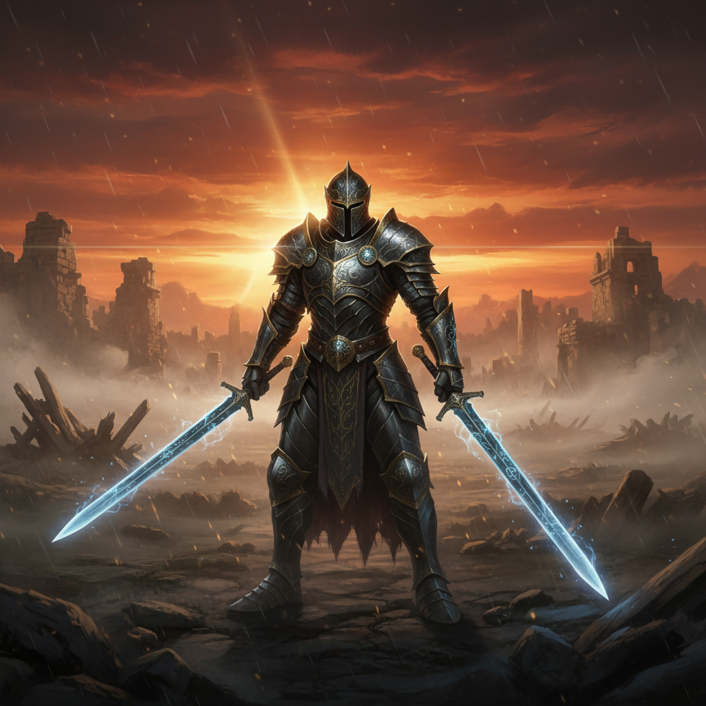

Biografia do compositor e pianista polonês Frédéric Chopin.
Frédéric Chopin (1810-1849) foi um compositor e pianista polonês, naturalizado francês, sendo um dos maiores expoentes do período Romântico e universalmente aclamado como o "poeta do piano".
Infância e Formação: Nascido perto de Varsóvia, na Polônia, ele demonstrou ser uma criança prodígio no piano. Desde muito jovem, já era aclamado em sua terra natal e, após estudar no Conservatório de Varsóvia, tornou-se um músico tecnicamente brilhante e sensível. A forte identidade polonesa e o folclore de seu país natal foram uma grande influência em sua obra.
Vida em Paris: Em 1830, aos 20 anos, ele deixou a Polônia e, após um período de viagem, se estabeleceu em Paris em 1831. A capital francesa era o centro cultural da Europa na época. Em Paris, Chopin fez carreira como pianista, compositor e professor,
Vida em Paris: Em 1830, aos 20 anos, ele deixou a Polônia e, após um período de viagem, se estabeleceu em Paris em 1831. A capital francesa era o centro cultural da Europa na época. Em Paris, Chopin fez carreira como pianista, compositor e professor, conquistando a aristocracia e a alta sociedade. Suas composições, embora tecnicamente exigentes, focavam na profundidade do sentimento e na beleza melódica.
Obra Musical: Chopin dedicou-se quase que exclusivamente ao piano. Sua obra revolucionou a música para teclado, explorando novas possibilidades expressivas e técnicas. Ele é autor de inúmeros prelúdios, noturnos, valsas, mazurcas, polonaises, baladas, scherzos e sonatas, muitas das quais são pilares do repertório pianístico. Destacam-se obras como o Noturno Op. 9 No. 2 e a Marcha Fúnebre (da Sonata No. 2).
Vida Pessoal e Saúde: Ele manteve uma amizade com grandes nomes da música, como Franz Liszt, e teve um notório relacionamento de nove anos com a escritora francesa George Sand. Sua saúde, no entanto, sempre foi frágil, e ele sofreu com a tuberculose por muitos anos.
Morte e Legado: Frédéric Chopin faleceu em Paris em 1849, aos 39 anos. A pedido dele, seu coração foi levado de volta à Polônia e está guardado na Igreja da Santa Cruz em Varsóvia, simbolizando seu profundo patriotismo. Sua música permanece admirada e é uma passagem obrigatória no estudo de qualquer pianista.
